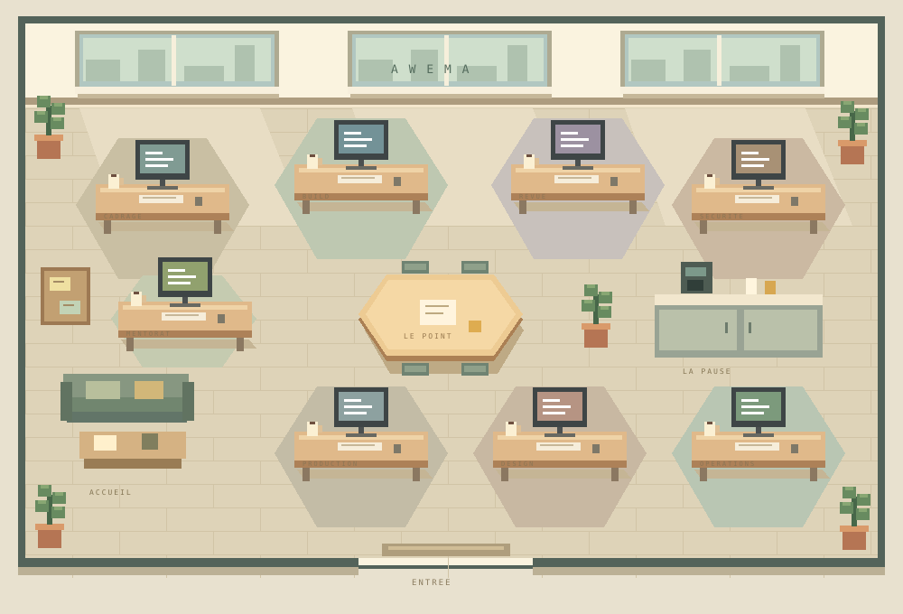

Bienvenue ! Choisissez un rôle ou une mission ci-dessous. Vous pourrez examiner les étapes et les preuves de chaque essai.
BIENVENUE CHEZ AWEMA
Entrez. On fait le point.
Un bureau, des métiers, une équipe. Choisissez quelqu’un pour commencer.
Badge visiteur
Laboratoire privé
Missions de démonstration
Le bureau
OBSERVATION À VÉRIFIER
ACCUEIL · PRÉSENTATIONBienvenue dans la ruche.Quelle idée souhaitez-vous nous confier ?
Choisissez une abeille pour la rencontrer.
Cliquez sur un personnage. Les bulles racontent votre mission ; le bureau s’anime aussi pour l’ambiance. Aucune conversation privée diffusée.
L’équipe · activité observée
VÉRIFICATION…Vérification des observations anonymisées de l’équipe.
Ce que vous observez
États issus des sessions Hermes, des tableaux de tâches et de la passerelle, actualisés toutes les 20 secondes. Une activité récente ou une carte en cours ne prouve pas une exécution continue. Les délégations sans attribution explicite restent regroupées sous CTO.
Les noms de projets, messages et dossiers restent privés. Les moteurs applicatifs, les relances Codex et les conversations détaillées ne sont pas raccordés à ce flux. Les missions d’essai ci-contre et leurs relectures sont séparées de cette observation.
COORDINATION
Le représentant CTO
Je vous accueille, clarifie votre objectif et coordonne les étapes de la mission.
MISSION D’EXEMPLE
Préparer un atelier fictif et vérifier les livrables.
Un espace conçu pour être évalué
Utilisez des données inventées. Ne transmettez ni mot de passe, ni clé API, ni information personnelle. Les limites font partie de l’exercice : un refus explicite vaut mieux qu’une action non autorisée.
Voir le périmètre du test ↓Parlons de votre idée
CONNEXION…Accueil · CTOVotre interlocuteur dans la ruche
UNE IDÉE POUR COMMENCER ?
Le carnet de preuves
Les étapes et résultats de votre session apparaissent ici. Un résultat reçu n’est pas une certification de son exactitude.
Votre premier essai ouvrira le carnet.
Le cadre de la démonstration
LE PÉRIMÈTRE, EN TOUTE CLARTÉ
Un espace d’évaluation.
Des limites explicites.
Neuf rôles, une équipe
Les personnages présentent des spécialités coordonnées. Ils ne représentent pas neuf services autonomes travaillant en permanence.
Des missions fictives
Testez la planification, les calculs et la vérification sur des exemples inventés. Le carnet décrit vos essais. Le panneau d’activité séparé montre uniquement des états anonymisés de l’équipe réelle.
Observer les résultats
Consultez les traces de votre session. Aucun accès administrateur, dossier client ou conversation privée. Seuls des états de fonctionnement expurgés sont visibles dans le panneau d’activité.